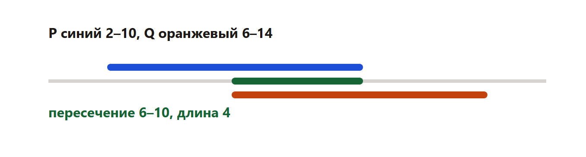
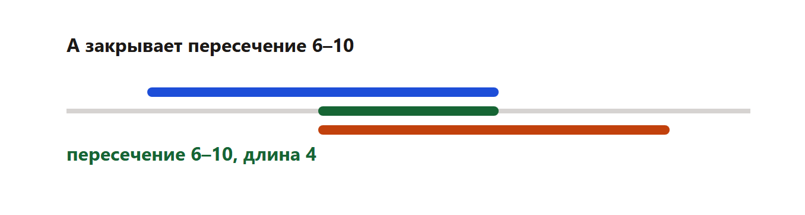

На прямой даны отрезки. Нужен отрезок A такой длины, чтобы логическое выражение было истинно при любом x. Обычно просят наименьшую возможную длину.
Длина отрезка от 6 до 10 равна 10 − 6 = 4. Это не количество целых точек.
Выражение из демоверсии:
(x ∈ P) → (((x ∈ Q) ∧ ¬(x ∈ A)) → ¬(x ∈ P))
Оно ложно только в одном случае: x лежит и в P, и в Q, и при этом не лежит в A. Значит A обязан накрыть всё пересечение P и Q. Короче этого пересечения A быть не может.
P = [2; 10], Q = [6; 14].

Пересечение — от 6 до 10. Наименьшая длина A равна 10 − 6 = 4.

P = [1; 8], Q = [5; 12]. Пересечение от 5 до 8. Длина 8 − 5 = 3.
P = [25; 64], Q = [40; 115]. Пересечение от 40 до 64. Длина 64 − 40 = 24.
Проверка: если A короче и не закрывает, например, точку 40, то x = 40 лежит в P и в Q, но не в A. Выражение в этой точке ложно. Значит 24 — действительно минимум.
Для формулы из теории выражение ломается ровно на пересечении P и Q, если точка не попала в A. Значит кратчайший A совпадает с пересечением. Левый конец — больший из двух левых. Правый — меньший из двух правых. Длина — разность, без прибавления единицы.
Программа не заменяет рисунок на прямой: на рисунке видно, почему точка 40 обязана войти в A. Число длины она печатает сразу.
Каждый фрагмент запускается отдельно. В конце он печатает ответ. Комментарии на русском говорят, какая строка за что отвечает.
def cover(p_left, p_right, q_left, q_right):
# A обязан закрыть пересечение P и Q.
left = max(p_left, q_left)
right = min(p_right, q_right)
return right - left # длина, не число целых точек
print(cover(2, 10, 6, 14)) # МЕНЯТЬ: концы P и QЧто менять, если условие другое.
Программа печатает 4.
def cover(p_left, p_right, q_left, q_right):
left = max(p_left, q_left)
right = min(p_right, q_right)
return right - left
print(cover(25, 64, 40, 115))Что менять, если условие другое.
Программа печатает 24.
p_left, p_right = 25, 64 # МЕНЯТЬ
q_left, q_right = 40, 115
print(max(p_left, q_left))Что менять, если условие другое.
Программа печатает 40.